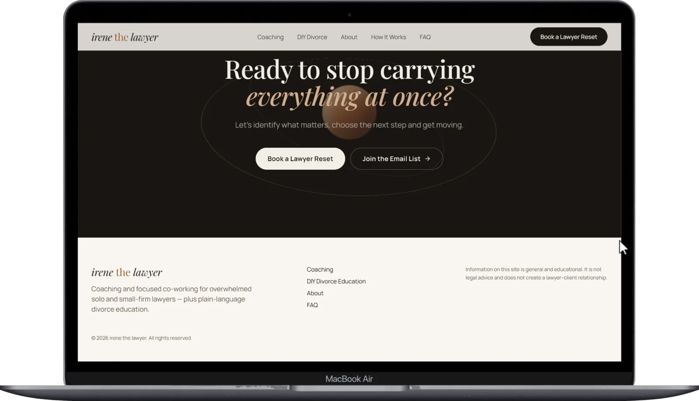

The Lawyer Reset
WordPress website design for The Lawyer Reset, a legal coaching and consulting brand, with structured service sections, consultation calls to action and responsive layouts.

Design focus
Designed a modern, responsive website for The Lawyer Reset, a legal coaching and consulting brand. The design combines elegant typography, a refined neutral color palette, structured service sections, consultation calls-to-action, resource areas, and a professional user experience. The focus was on WordPress website design, UI/UX, responsive layouts, clear content hierarchy, and conversion-focused design to communicate the brand’s value, build trust, and encourage prospective clients to book a consultation.
Clarity, page by page.
Swipe or use the arrows to move through the work. Click the image to view it full screen, then use the arrow keys or buttons to browse.
Have a website project in mind?
Send over what you’re working on and I’ll respond with the next step.